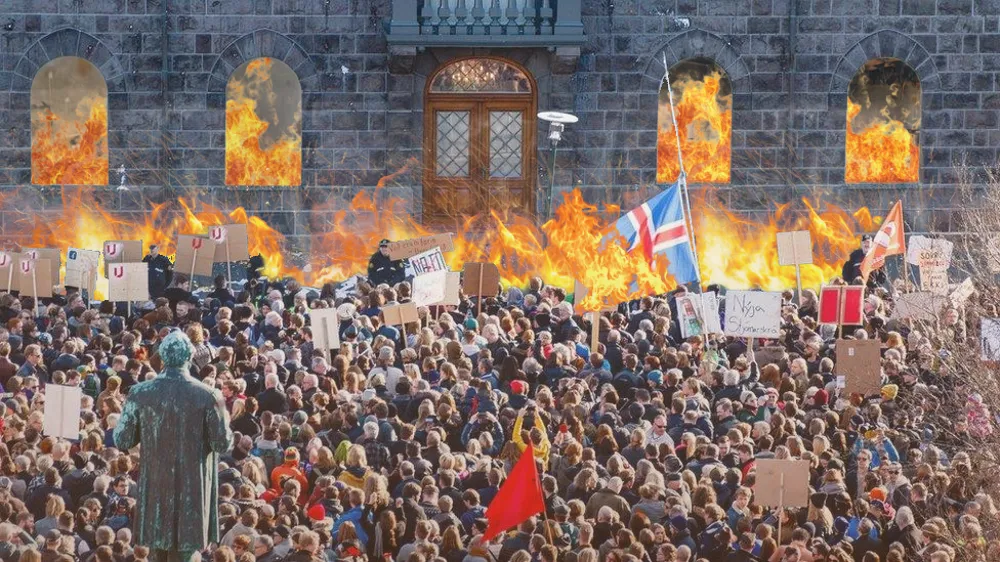

Utrikes

Revolt på Island – kräver spänning
Under de senaste veckorna har protester brutit ut på den lilla vulkaniska ön Island. Protesterna var till en början oorganiserade och fokuserade på riktiga politiska frågor om natur och kultur. Under förrförra veckans protester blev en isländare viral i allt kaos med ett meddelande som verkligen lockade väljare. Hon var flamman som tände på ö-nationens önskan att något exalterande skulle hända.
Enligt en studie publicerad av RÚV, Islands SVT, så har ingenting särskilt spännande hänt på ön sedan den hittades av vikingar år 874. Visst det har varit en självständighetskamp, en ockupation och många vulkanutbrott men ingenting i jämförelse med vad som har hänt i resten av världen. Måndag morgon den 5 januari förklarades Alltinget, Islands riksdag, störtat. Läget i Island är fortfarande väldigt osäkert men experter har redan börjat spekulera om hur den nya folkrörelsen skulle kunna sätta upp ett system med mer spänning. Men få tror att Islands tusenåriga mandat kring strategisk tråkighet kommer klara sig mycket längre.